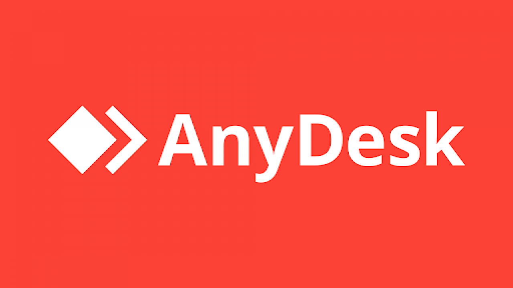

¿Qué es AnyDesk?
AnyDesk es un programa de escritorio remoto. Te permite controlar otro ordenador a distancia desde el tuyo, como si estuvieras sentado delante de él. Lo usamos técnicos, empresas y estudiantes de informática para dar soporte, acceder a equipos de trabajo o hacer prácticas remotas. Es rápido, fácil y gratuito para uso personal.
Lo primero es ir a la página oficial para descargar el instalador. Nunca lo descargues de páginas de terceros, podrías llevarte malware de regalo.
Abre tu navegador y ve a: https://anydesk.com/es

- Haz clic en el botón rojo "Descargar gratis" que aparece en la portada de la web.
- Se descargará automáticamente un archivo llamado algo así como
AnyDesk.exe(unos 4-5 MB). - Busca el archivo en tu carpeta de Descargas o en la barra inferior del navegador.
Dato curioso: AnyDesk no necesita instalación completa si lo ejecutas directamente. El .exe funciona también como versión portable.
Tienes dos formas de usar AnyDesk: ejecutarlo directamente (sin instalar) o instalarlo como programa permanente. Para realizar correctamente los encargos solicitados por nuestros clientes lo más normal es instalarlo.
- Haz doble clic sobre el archivo
AnyDesk.exedescargado. - Si Windows muestra un aviso de "Control de cuentas de usuario", haz clic en Sí.
- Se abrirá AnyDesk directamente. Verás en la esquina inferior izquierda el botón "Instalar AnyDesk". Haz clic en él.
- Elige la carpeta de instalación (la que sale por defecto está bien) y haz clic en "Aceptar".
- Espera unos segundos. ¡Listo! AnyDesk ya está instalado en tu equipo.
Atención: Si estás en un ordenador del centro educativo, puede que no tengas permisos de administrador para instalar programas. En ese caso, usa el .exe directamente sin instalar.
Al abrir AnyDesk, verás una pantalla dividida en dos partes: tu ID de escritorio (a la izquierda) y un campo para conectarte a otro equipo (a la derecha). Así de simple.
Tu escritorio
Conectar a otro equipo
- Tu ID es el número grande de la izquierda. Compártelo con quien quieras ( en este caso con nosotros porque si no no podremos ayudarle ) que se conecte a tu equipo.
Consejo pro: Puedes poner una contraseña fija en Configuración → Seguridad, para no tener que aceptar manualmente cada vez. Es bastante útil.
Esta es la puerta por la que podremos trabajar y ayudarle.
- Necesitaremos que abra AnyDesk en el equipo con el que necesite ayuda.
- Como usted es quien va a recibir la conexión necesitaremos que nos pase su número de ID (el de la izquierda).
- Nosotros escribiremos dicho número en el campo "Conectar a" y entraremos en su equipo.
- Le aparecerá una ventana de solicitud. Haga clic en Aceptar.
- Ya veremos su escritorio y estaremos listos para empezar a trabar.
- Para desconectar, cierre la ventana o pulsa el botón de colgar (la X roja de la barra de AnyDesk).
Importante: Nunca aceptes conexiones de personas que no conoces. AnyDesk es una herramienta legítima, pero los estafadores la usan para hacer ataques de ingeniería social (el clásico "soy de soporte técnico de Microsoft...").
¿Es gratis AnyDesk? Para uso personal y educativo, sí, es gratuito.
¿Funciona sin instalar? Sí. El archivo .exe descargado se puede ejecutar directamente sin instalar. Perfecto para pendrives o equipos sin permisos de admin.
¿Cambia el ID cada vez? No, el ID es fijo para cada instalación. Si usas la versión portable (sin instalar), el ID puede cambiar entre ejecuciones.
¿Funciona entre sistemas distintos? Sí, puedes conectar Windows con Mac, Linux, Android o iOS. AnyDesk es multiplataforma.
¿Es seguro? Sí, usa cifrado TLS 1.2 y AES-256. El problema no es el programa, sino cómo lo usas. Nunca aceptes conexiones no solicitadas.